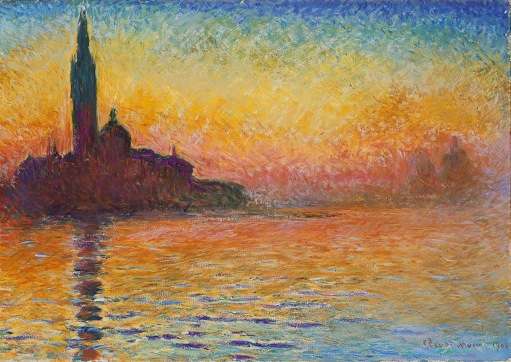

Edmund Cheng & Christian Huh
Presenting on
"Claude Monet"

Figure 4: San Giorgio Maggiore at Dusk Painting
Painting is also known as “Sunset in Venice” where Monet and his wife traveled to
Painted at night to capture the impression of light, shadow, color, and reflection
Mainly focuses on the effects of light